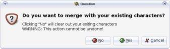
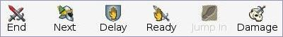

Start Your Combat!
Now you are ready to actually start using Turn Watcher in your game!
-
Start the application and clear out the list of characters if needed
( is in the
menu).
-
Select from the
menu to load your list of
characters for your campaign.
-
Select again to load your
list of opponents for this encounter. Turn Watcher
asks you if you want to merge with your existing characters.
Click the Yes button.

-
 Start your combat by clicking the Start button (once it has been clicked,
the Start button changes to an End button).
Turn Watcher automatically rolls separate initiative rolls for every
PC and monster and lists them in initiative order for you! It also keeps
track of rounds in the status bar at the bottom of the main window.
Start your combat by clicking the Start button (once it has been clicked,
the Start button changes to an End button).
Turn Watcher automatically rolls separate initiative rolls for every
PC and monster and lists them in initiative order for you! It also keeps
track of rounds in the status bar at the bottom of the main window.
Tip: Deselect in
the menu to avoid the automatic roll of
initiative on Start
(read more).
-
If is selected in
the menu, the manual initiative
dialog displays.
This dialog gives you a chance to enter initiative rolls manually,
allowing you to let your players do their own rolling. The combatants
are sorted in alphabetical order, and there are two separate columns for
PCs and monsters. The values you see at first are computer generated, so
you can let Turn Watcher roll for your monsters/NPCs easily.
(available since version 1.1)
-
Press the Next button to move from one character to the next after it
takes its full action. The character's turn is marked with an arrow (shaped
like a sword) to the left of the name.
Tip: Hit Space Bar to easily advance to the next character.
-
To come out of rounds, click the End button.

Some game masters and players prefer to reduce the chances for someone
to get a 1 or a 20 on their dice. One way to prevent this from happening
is to change the dice being rolled from 1d20 to 2d10 or 3d8-2 or some other
multi-dice combinaison. By default the system is setup to roll 1d20.
To change the default, select
from the
menu. Type in the dice you want to
use such as 2d10, 3d8-2 or 1d20+2; then click Accept. Your selection
is automatically saved when you exit Turn Watcher so you do not have
to set it again and again.
(available since version 1.1)
Tip: If at any time you make a mistake and want to undo your
action, simply select in the
menu.
|